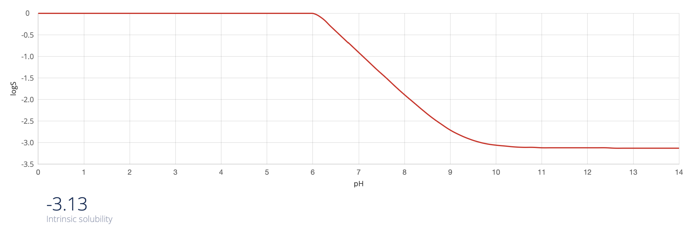

Overview & Identification
IUPAC
[1-(2,3-dihydro-1H-inden-1-yl)ethyl](prop-2-yn-1-yl)amine
Formula
C14H17N
Molecular Weight
199.30 g/mol
Exact Molecular Weight
199.1361
Composition
C: 84.37%, H: 8.60%, N: 7.03%
CAS Number
Not assigned (novel compound)
Physical & Chemical Properties
Intrinsic Solubility (logS)
-3.13
logP
2.88
logD (pH 7.4)
1.08
Most Basic pKa
9.21
Hydrogen Bond Donors
1
Hydrogen Bond Acceptors
1
Rotatable Bonds
4
Topological Polar Surface Area (TPSA)
≈ 12 Ų
SMILES
CC(C1c2ccccc2CC1)NCC#C
pH-Dependent Properties
Solubility (Log S)
Lipophilicity (Log D)

Predicted solubility and lipophilicity profiles suggest balanced amphiphilicity—low aqueous solubility but suitable membrane permeability for CNS penetration.
Synthesis Overview
Method 1
Reductive amination of 1-(2,3-dihydro-1H-inden-1-yl)ethanone with propargylamine, followed by reduction with NaBH₃CN.
Method 2
Reaction of 1-(2,3-dihydro-1H-inden-1-yl)ethan-1-amine with propargyl bromide in the presence of base (e.g. Na₂CO₃) in acetonitrile.
Applications & Uses
Research Use
MAO inhibition studies, neuroprotective agent screening, and CNS pharmacokinetics research.
Therapeutic Potential
Investigational use for Parkinson’s disease, depression, ADHD, and related neuropsychiatric disorders.
Pharmaceutical Utility
Prototype scaffold for propargylamine-based MAO inhibitors; potential salt forms include HCl, mesylate, and fumarate.